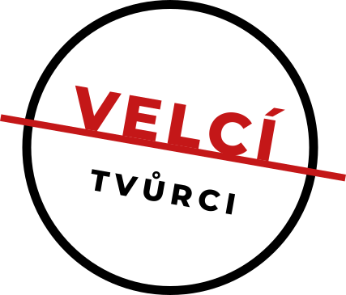

STUDIO UNDERGROUND - DŮM nabízí na výběr ze spektra aktivit z různých uměleckých odvětví. Jedná se o
veřejnosti otevřené tvořivé dílny v oblastech: herectví, pohybového divadla, scénografie, kostýmní
tvorby, práci s materiálem, ale také práce se slovem, či s rytmem a hudbou. Díky naši personální
propojenosti i na odvětví audiovizuální tvorby nabízíme také fotografické, či kamerové workshopy a
tvořivé dílny.
Červen 2021
workshop improvizace |Šimon Pliska |250 kč
tvořivá dílna: herecká otevřená hodina
Červenec 2021
workshop improvizace
tvořivá dílna: hudba v divadle
Srpen 2021
promítaní studentských filmů a audiovizuální tvorby STUDIA UNDERGROUND
tvořivá dílna: letní grilování a míchané drinky
Září 2021
wworkshop herecká práce před kamerou
tvořivá dílna: scénografie a materiál
Říjen 2021
workshop filmového střihu
tvořivá dílna sound design pro film
Listopad 2021
workshop práce s materiálem
tvořivá grafická dílna
Prosinec 2021
workshop perkuse a rytmy
tvořivá dílna: herec model, sochařská tvořivá dílna